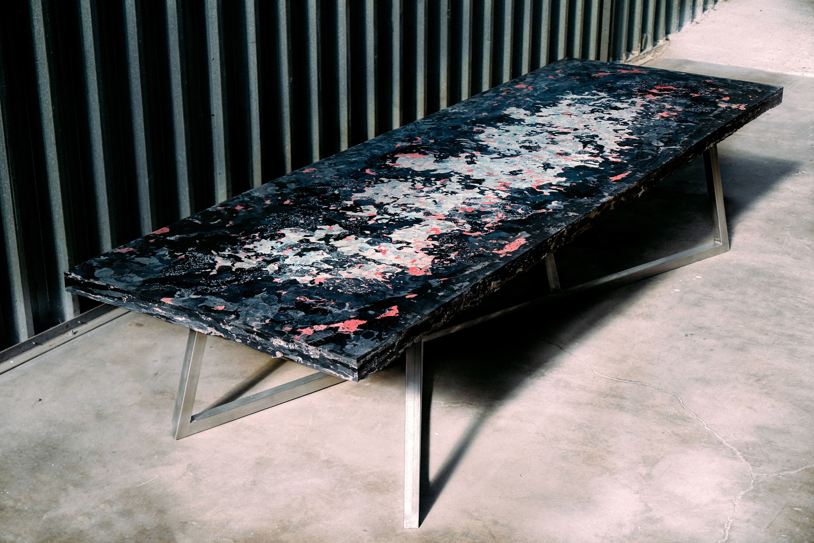

Jaden Smith approached us to design a conference table out of recycled plastic. This project offered us a great opportunity to experiment and innovate. We began working on the project at the end of 2018, crafted throughout the beginning of 2019 and unveiled to the public at EMA conference in LA, California.


While exhibiting during Dutch Design Week 2018, Jaden dropped by to say hi and learn more about Precious Plastic. Apparently he is quite a big fan of.. Plastic 🤣 Actually, he is a fan of recycled plastic, just like us. Between selfies and boomerangs he goes ”yo bro, can you make a big conference table”. And we were like “How big?”. Jaden replies, “A massive conference table”. We never made a table. Seemed like a good challenge. We agreed to make it 💪
Making a table from plastic sheets would have been the most obvious and safe choice for us. But we do pilots to try weird new processes and learn from them. Experiments that get us out of our comfort zone and push the limits of plastic recycling. After a few brainstorms with our master craftsman Johe, we decided to make a big massive extruded plastic table that feels like stone.


The table is made from waste like cups, cd cases and the inside of fridges. All that plastic is polystyrene, no matter what colour or size. The process of the table is rough and very experimental. The plastic is first shredded into small flakes. After that the journey begins, many hours of extruding, shaving and polishing. Spending time to carve that solid block of molten plastic into a beautiful, usable surface. True craftsmanship applied to plastic. Discovering little details and colour blends layer by layer.


The more we were working on the table the more central the Anthropocene theme became, the age where human activity is impacting the planet on a geological and environmental level. Not trying to be arty or cool, just the realisation that plastic can be stone and is one of those materials that is going to be around for a long time impacting our earth (oceans, land, sediments, rocks etc..). And in a way, that’s also the impressive thing about plastic, it lasts super long. Yet we use it to make cheap quick disposable stuff. This time we wanted to make something that could last. Like a piece of rock. A handcrafted piece of art, made with love and care for details. The expression of a new craftsmanship.


Jaden Smith is kind of famous. A celebrity, influencer, whatever. We see him more like a cool guy that wants to help finding solutions to the plastic problem. Just like every member of our community 😎 Maybe, with a few more followers here & there but generally a fellow plastic fighter. He asked “how much money bro?”, we said “no idea, never done anything similar”. Being a pilot where we want to try out new things we also decided to test out new ways of collaborating with people and institutions. We agreed on making the table, shipping it and letting Jaden make a donation based on what he thinks it’s worth it. Kind of fun. Let’s see :)
It took us about 3 months to complete the table. We spent the first month designing and doing multiple tests researching the best techniques, types of plastic to use, strength and aesthetic approach. Once we agreed on the direction, Johe extruded and sanded for a good 4 weeks straight. With the table ready, our master welder Yann made an exquisite steel frame to carry the over 300kg of plastic.


As always with pilots there's been a great deal of learnings involved in the project. Below is a list of the most interesting things we've discovered:
- Making a table in this way is not very efficient
- Too much dust particles are created, next time avoid sanding
- Polystyrene works surprisingly well for a big surface, CD cases are awesome material. Collect them.
- Making plastic heavy definitely makes it feel more precious
- People can’t see the difference between stone & plastic
- Shipping a table around the world doesn’t make sense. Next time locally.
- Scraping off 4 mm of the plastic surface unveils a whole new world of mixes and colours. Marveling.
- LA is sunny ☀️☀️☀️
- Rapper's agents are chaos
Pilots are unique opportunities to test Precious Plastic ideas, technologies and processes on the ground. We collaborate with different institutions, partners and organisations to create Precious Plastic workspaces around the world.
We do pilots for two main reasons: research and testing. Working in different countries, with people of completely different cultures, realities, needs and drives help us understand the problem in a more informed and practical way. This field research is then used to develop Precious Plastic in more meaningful, accessible and applicable manners enabling ever more people around the world to work with plastic waste. While on the ground we also stress test our ideas, machines and systems to try and make successful plastic recycling workspaces in different parts of the world.
We like to make the mistakes, fail, pivot and find a better solutions. So others like yourself don’t need to make the same mistakes again. Trying to make plastic recycling easier and more affordable for others around the world.